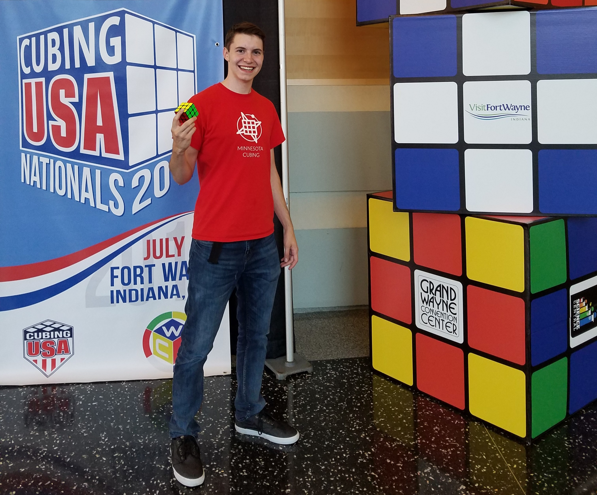

Leadership and Activities
Marching Band Guide
Iowa State Marching Band

My time at Iowa State has provided many opportunities for personal
development and achievement. I was involved in the Iowa State Marching Band
for 3 years, taking the position of guide in my third year.
As part of this position, I co-lead a rank of 9 people, instructing them on
proper marching technique and helping communicate the directions of band leadership.
I also played with the mens basketball pep band for 3 years. This fantastic group was
smaller and had a focus on high quality sound.
This group was a highlight of my college career, allowing
me the oppportunity to travel to two Big-12 basketball tournaments, the NCAA
tournament, and watch the Iowa State Cyclones win the Big-12 Championship in 2019.
Rubik's Cube Competition Organizer

Since high school I have been actively involved in solving Rubik's cubes competitively.
These competitions revolve around solving Rubik's cubes
of different shapes and sizes as quickly as possible. This great hobby has
afforded me some wonderful oppportunities, such as making friends with people
across the country and world, and traveling to multiple national tournaments to
compete with the best of the best. Additionally, I have achieved many personal
goals, such as solving a Rubik's cube in 7 seconds, earning multiple Iowa records,
and ranking in the top 400 of speedcubers worldwide.
Beyond competing, in recent years I have hosted competitions
to allow cubers from around the state and midwest to come enjoy this fantastic
hobby. These competitions range from 80 to 150 competitors, with total
attendance exceeding 300 people. I was responsible
for finding a venue, scheduling events, organizing volunteer staff,
and maintaining the budget to ensure a well run event.